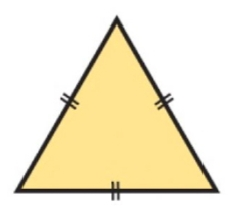
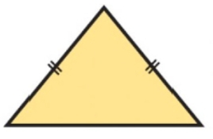
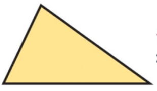
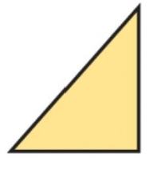
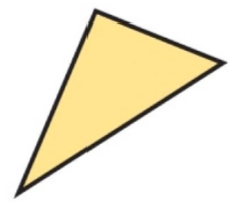
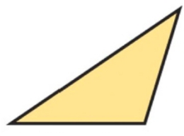

4to Año de Telemática — Proyecto de Desarrollo

Tiene los 3 lados iguales y sus 3 ángulos internos miden siempre 60°.

Tiene 2 lados iguales y uno diferente. Requiere cálculo de altura por Pitágoras.

Tiene sus 3 lados y sus 3 ángulos completamente diferentes.

Posee un ángulo recto de 90° y permite definir las razones trigonométricas fundamentales y recíprocas.

Sus 3 ángulos internos son menores a 90°. Se analiza con la Ley de los Senos y Cosenos.

Tiene un ángulo interno mayor a 90°. Analiza las razones en el II cuadrante.